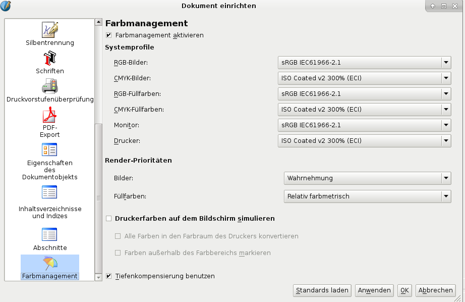

Display of a drawing with gamut warning switched off (left) and gamut warning switched on (right)
Getting good previews from color management depends on at least the following steps from the user:
Some profiles are “generic” and can be downloaded from the device manufacturer. This type of profile is generated from a sampling of units by a manufacturer. A growing number of monitors, scanners and certain printer vendors will include this in the software bundled with the device. While these “canned” profiles are rarely a perfect match, this is a good first place to start, especially if you can’t afford expensive calibration hardware. Go to the vendor’s website and see if there a profile available for your device. For monitor color profiles you can also use the Taxi database, a service provided by the OpenSUSE project.
The most precise way to profile a monitor is with a electronic profiling device, which is basically a very special type of camera that measures color. The software sends known reference colors to the monitor which then reads the output to the profiling device and creates a profile. Not so long ago, Linux drivers for common colorimeters weren’t available, but thanks to the enthusiasm of Open Source color management experts, most devices can be used at least on Linux, Mac OS X and Windows these days. The Open Source drivers can also be compiled on UNIX platforms, while support for Haiku, OS/2 and eComStation is unlikely.
The color management settings are available via the Preferences/the Document Setup. Remember that you need at least 1 RGB and 1 CMYK profile installed to activate color management. Also note that editing, saving and closing the file with color management on will slow down Scribus, since littleCMS must read and perform the corrections between the profiles:
|  |
“System Profiles:” These 6 drop down boxes show the available profiles on your system. Note that you have to set the profiles for images (i.e., bitmap images) and solid colors separately. You also have to select separate profiles for the RGB and CMYK color spaces. With respect to the “Printer” profile, please be aware that Scribus currently only supports profiles for commercial printing devices/workflows. A profile for your desk-jet printer won’t work with Scribus and will not be available in the list of profiles.
The second part of the dialog deals with Rendering Intents, which will be explained in the next section.
At the bottom of the color management settings you can see a check mark called “Simulate Printer on the Screen.” This tells Scribus and littleCMS to simulate the colors your chosen printer can reproduce according to the selected printer profile.
The check mark for “Mark Colors out of Gamut” will mark areas in your document with a green warning color, because the colors in these areas might not print accurately, based on the printer profile you have chosen. Typically, when colors are shown out of gamut, they will print darker, lighter or have a color shift when printing:
| |
Display of a drawing with gamut warning switched off (left) and gamut warning switched on (right) |
The last option, “Use Black Point Compensation,” is a way to help rendering shadows within color pictures. Experimentation is needed to see if it improves your pictures.